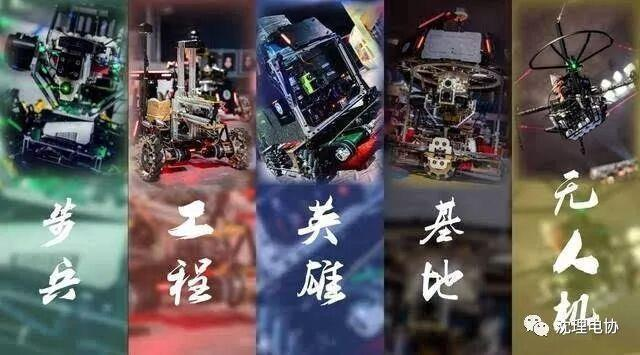
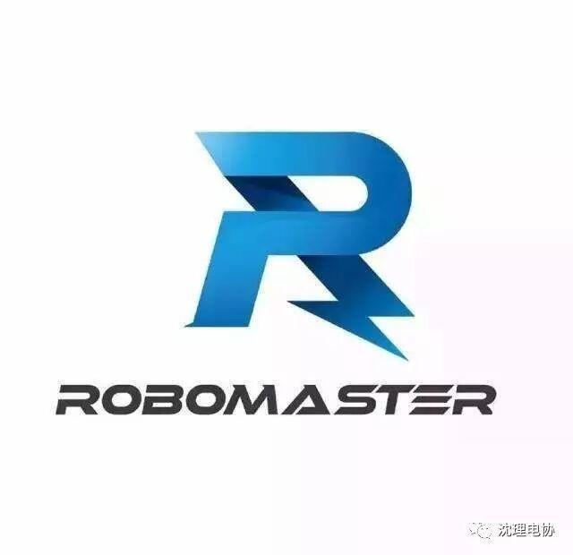
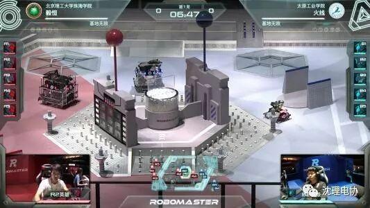
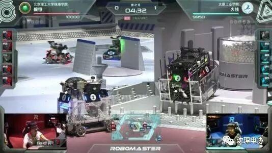
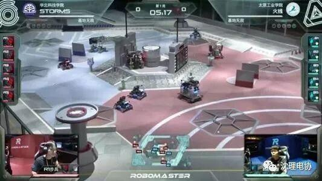

关于RoboMaster

关于RoboMaster
RoboMaster全国大学生机器人大赛比拼的是参赛选手们的能力、坚持和态度，展现的是个人实力以及整个团队的力量
发掘有风度的“机神”级人物，助力一代明星工程师在此起航
帮助理工男从幕后走到台前，完成技术宅的“逆袭”
将大学生从游戏中解放出来，通过机器人竞技实现自我理想
4
激发大学生纯粹的做事态度，培养他们对极致的追求
汪滔说：“我是希望借助RoboMasters这项赛事，来解决国家工程技术人才培养的问题......我们尝试用新的方法激励他们的创造力，培养他们的思辨能力。此类赛事不但能塑造姚明、刘翔这样的全民偶像，更能产生乔布斯这样受人尊敬的发明家和企业家。”
我们学校机器人比赛的人气战队Amibition，也需要大家帮忙投票~http://bendi.news.163.com/guangdong/special/robot/
操作流程：点开链接→登录网易账号→选择中部部赛区→沈阳理工大学→Ambition战队 [捂脸][比心]





——编辑：阮倩雯
长按二维码，关注我们